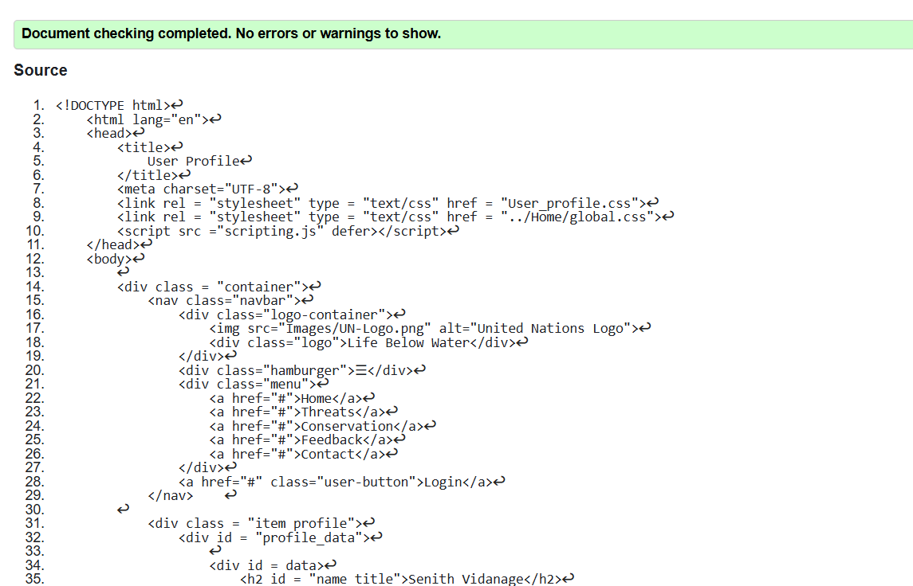
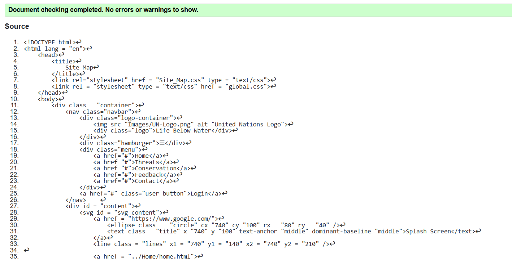
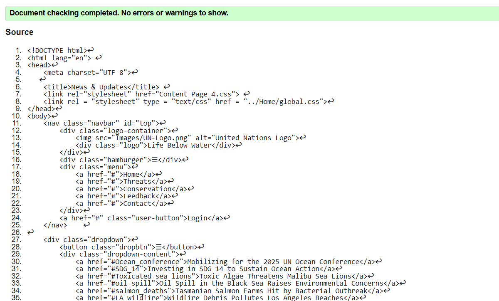
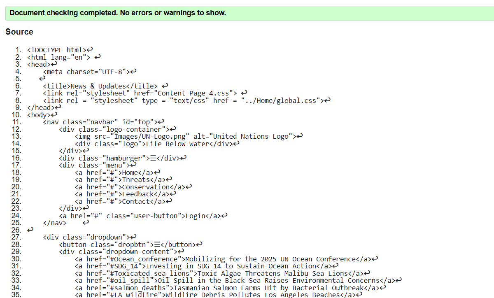

Profile Page validation report
Back to Page Editor page
Sitemap Page validation report
Back to Page Editor page
Content Page validation report
Include a short reflection on the validation report for the pages you implemented.
Include a short reflection on the validation report for the pages you implemented.
